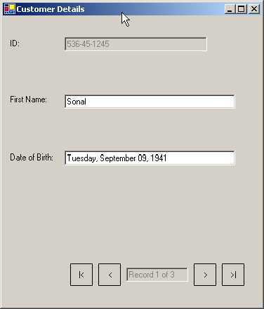

5
Data Handling
a.cs
using System;
using System.ComponentModel;
using System.Drawing;
using System.Windows.Forms;
using System.Data;
using System.Data.OleDb;
using System.IO;
using System.Collections;
public class CustomerList : System.Collections.CollectionBase
{
public static CustomerList GetCustomers()
{
CustomerList cl = new CustomerList();
Customer a = Customer.ReadCustomer1();
IList b = cl.List;
b.Add(a);
Customer c = new Customer("246-12-5645");
c.FirstName = "Vijay";
c.DateOfBirth = DateTime.Parse("5/3/1933");
cl.Add1(c);
cl.Add1(Customer.ReadCustomer2());
return cl;
}
public int Add1(Customer value)
{
return List.Add(value);
}
}
public class Customer : Component
{
public string id,FirstName ;
public DateTime dateOfBirth;
public static Customer ReadCustomer1()
{
Customer cust = new Customer("536-45-1245");
cust.FirstName = "Sonal";
cust.DateOfBirth = DateTime.Parse("9/9/1941");
return cust;
}
public static Customer ReadCustomer2()
{
Customer cust = new Customer("651-27-8117");
cust.FirstName = "Manish";
cust.DateOfBirth = DateTime.Parse("3/25/1942");
return cust;
}
public Customer(string ID): base()
{
id = ID ;
}
public string ID
{
get
{
return id ;
}
}
public string FirstName1
{
get
{
return FirstName ;
}
}
public DateTime DateOfBirth
{
get
{
return dateOfBirth ;
}
set
{
dateOfBirth = value ;
}
}
}
public class zzz : Form
{
TextBox textBoxPosition;
CustomerList custList;
void textBoxDOB_FormatDate(object sender, ConvertEventArgs e)
{
if (e.DesiredType != typeof(string))
return ;
if (e.Value.GetType() != typeof(DateTime))
return ;
DateTime dt = (DateTime)e.Value;
e.Value = dt.ToLongDateString();
}
void textBoxDOB_ParseDate(object sender, ConvertEventArgs e)
{
if (e.DesiredType != typeof(DateTime))
return ;
if (e.Value.GetType() != typeof(string))
return ;
string value = (string)e.Value;
try
{
e.Value = DateTime.Parse(value);
}
catch(Exception ex)
{
MessageBox.Show(ex.Message);
}
}
void buttonMoveFirst_Click(object sender, System.EventArgs e)
{
BindingContext[custList].Position = 0 ;
}
void buttonMoveLast_Click(object sender, System.EventArgs e)
{
BindingContext[custList].Position = custList.Count - 1;
}
void buttonMoveNext_Click(object sender, System.EventArgs e)
{
if (BindingContext[custList].Position < custList.Count - 1)
{
BindingContext[custList].Position++;
}
}
void buttonMovePrev_Click(object sender, System.EventArgs e)
{
if (BindingContext[custList].Position > 0)
{
BindingContext[custList].Position--;
}
}
void customers_PositionChanged(object sender, System.EventArgs e)
{
textBoxPosition.Text = "Record " + (BindingContext[custList].Position + 1) + " of " + custList.Count;
}
public zzz() {
Text = "Customer Details";
ClientSize = new System.Drawing.Size(368, 413);
MinimumSize = new Size(368, (413 + SystemInformation.CaptionHeight));
Label labelFirstName,labelID,labelDOB;
labelID = new Label();
labelID.Location = new System.Drawing.Point(8, 32);
labelID.Text = "ID:";
labelID.Size = new System.Drawing.Size(64, 16);
labelFirstName = new Label();
labelFirstName.Location = new System.Drawing.Point(8, 112);
labelFirstName.Text = "&First Name:";
labelFirstName.Size = new System.Drawing.Size(64, 16);
labelDOB = new Label();
labelDOB.Location = new System.Drawing.Point(8, 194);
labelDOB.Text = "&Date of Birth:";
labelDOB.Size = new System.Drawing.Size(92, 16);
TextBox textBoxDOB,textBoxFirstName,textBoxID;
textBoxID = new TextBox();
textBoxID.Location = new System.Drawing.Point(88, 30);
textBoxID.ReadOnly = true;
textBoxID.Enabled = false;
textBoxID.Size = new System.Drawing.Size(203, 20);
textBoxFirstName = new TextBox();
textBoxFirstName.Location = new System.Drawing.Point(88, 112);
textBoxFirstName.Size = new System.Drawing.Size(243, 20);
textBoxDOB = new TextBox();
textBoxDOB.Location = new System.Drawing.Point(88, 192);
textBoxDOB.Size = new System.Drawing.Size(243, 20);
textBoxPosition = new TextBox();
textBoxPosition.Location = new System.Drawing.Point(88, 14);
textBoxPosition.ReadOnly = true;
textBoxPosition.Enabled = false;
textBoxPosition.Size = new System.Drawing.Size(88, 20);
Button buttonMoveFirst,buttonMovePrev,
buttonMoveNext,buttonMoveLast;
buttonMoveNext = new Button();
buttonMoveNext.Location = new System.Drawing.Point(184, 8);
buttonMoveNext.FlatStyle = FlatStyle.Flat;
buttonMoveNext.Size = new System.Drawing.Size(32, 32);
buttonMoveNext.Text = ">";
buttonMoveNext.Click += new System.EventHandler(buttonMoveNext_Click);
buttonMovePrev = new Button();
buttonMovePrev.Location = new System.Drawing.Point(48, 8);
buttonMovePrev.FlatStyle = FlatStyle.Flat;
buttonMovePrev.Size = new System.Drawing.Size(32, 32);
buttonMovePrev.Text = "<";
buttonMovePrev.Click += new System.EventHandler(buttonMovePrev_Click);
buttonMoveFirst = new Button();
buttonMoveFirst.Location = new System.Drawing.Point(8, 8);
buttonMoveFirst.FlatStyle = FlatStyle.Flat;
buttonMoveFirst.Size = new System.Drawing.Size(32, 32);
buttonMoveFirst.Text = "|<";
buttonMoveFirst.Click += new System.EventHandler(buttonMoveFirst_Click);
buttonMoveLast = new Button();
buttonMoveLast.Location = new System.Drawing.Point(224, 8);
buttonMoveLast.FlatStyle = FlatStyle.Flat;
buttonMoveLast.Size = new System.Drawing.Size(32, 32);
buttonMoveLast.Text = ">|";
buttonMoveLast.Click += new System.EventHandler(buttonMoveLast_Click);
Panel panelVCRControl;
panelVCRControl = new Panel();
panelVCRControl.Location = new System.Drawing.Point(88, 344);
panelVCRControl.Size = new System.Drawing.Size(264, 48);
panelVCRControl.Text = "panel1";
panelVCRControl.Controls.AddRange(new Control[]
{textBoxPosition,buttonMoveFirst,buttonMovePrev,
buttonMoveNext,buttonMoveLast});
Controls.AddRange(new Control[]
{textBoxDOB,labelDOB,panelVCRControl,textBoxFirstName,
textBoxID,labelFirstName,labelID});
custList = CustomerList.GetCustomers();
ControlBindingsCollection a = textBoxID.DataBindings;
a.Add("Text", custList, "ID");
textBoxFirstName.DataBindings.Add("Text", custList, "FirstName1");
Binding dobBinding = new Binding("Text", custList, "DateOfBirth");
dobBinding.Format += new ConvertEventHandler(textBoxDOB_FormatDate) ;
dobBinding.Parse += new ConvertEventHandler(textBoxDOB_ParseDate) ;
textBoxDOB.DataBindings.Add(dobBinding);
BindingManagerBase c = BindingContext[custList];
c.PositionChanged += new EventHandler(customers_PositionChanged);
textBoxPosition.Text = "Record " + (BindingContext[custList].Position + 1) + " of " + custList.Count;
}
public static void Main() {
Application.Run(new zzz());
}
}
Before submerging deep into the
topic of Data Binding with Windows Forms Controls, let us first address the
issues of the User Interface.
|
 |
|
Screen 5.1 |
In the zzz constructor, the Text
property of the Form class, which is initialized to 'Customer Details', dons
the mantle of the window title. The ClientSize property determines the size of
the Form. The MinimumSize property ensures that the size is not reduced beyond
the value specified. We have dealt with these properties quite a while ago. The
User Interface code is more germane for creating a visually appealing window,
than for ameliorating our understanding of the core concepts of Data Binding.
We intend to display three text
labels in our window. To facilitate this, it is essential to create three label
controls viz., labelFirstName, labelID and labelDOB. The text property of each
is initialized to ID, First Name and Date of Birth respectively. We have
deliberately not altered the names of the controls provided in the original
sample. Furthermore, we have not modified
any of the label control codes, in order to facilitate effortless
comprehension. Besides Text, the other properties of the label control that we
modify are the Location and the Size.
This user interface code is
usually written by a utility called the Screen Painter and not by the
programmer. This is because, it is very irksome and arduous for a programmer to
supply coordinates, in pixels, for Properties such as the Location etc.
We will display data employing
the services of a textbox. Thus, three textboxes named textBoxDOB,
textBoxFirstName and textBoxID, have been provided, to store the date of birth,
first name of customer and the customer ID, respectively. The Size of each
textbox is defined by modifying the value contained in the Size property.
Thereafter, a new location is specified using the Location property. The
textbox displaying the customer ID has the ReadOnly property set to true, so
that its contents cannot be altered.
Moreover, setting the Disabled property to false disables the field. One
more textbox control called textBoxPosition is introduced. It displays the
current active record and the total number of records in the recordset. We
shall not discuss the textbox properties any further in the forthcoming
programs.
We now need buttons in our
window to enable the user to navigate between records. To attain this, the four
button controls and their corresponding actions are given below:
• buttonMovePrev : Moves to the previous record.
• buttonMoveNext : Moves to the next record.
• buttonMoveFirst : Jumps to the first record.
• buttonMoveLast : Jumps to the last record.
We can set the properties of
Location, Size and Text of the button controls to suit our requirements. For an
enhanced visual appeal, the FlatStyle property is also altered. We use the
Click event to wire up each button to a corresponding method having a similar
name. This is done to ensure that every time we click on a button, the desired
code gets executed. The code that gets activated will be dealt with
subsequently.
A Panel control, by itself, is
worthless, since it does nothing. Its role becomes consequential only when it
aggregates or collects other controls. By placing controls within a Panel
control, we can deal with all of them simultaneously. Thus, with a single line
of code, we can disable a panel, thereby effectively, disabling all the
controls contained therein. So, by using a panel control, a large number of
controls can be treated as a single control and all their properties can be
changed in unison. The Location and Size properties of the Panel control named
panelVCRControl are set to certain specific co-ordinates. The Text property is
initialized, but it does not get displayed on the screen.
The Panel control, like any other
control, has a Controls property having a data type of
Control.ControlCollection. Using the AddRange method that requires an array,
all controls are added in a single action to the ControlCollection. This is
analogous in functionality to the Add function, which adds only a single
control to the Controls Collection. Thus, internally, AddRange repetitively
calls the Add function, and in each iteration, supplies it with a single member
of the array, till it has passed all the members of the entire array as
parameters.
To summarize, we add the four
textboxes and one label control to the panel, so that we can treat them as a
single entity. In this program, we however, are not utilizing this property.
The rest of the controls, including the panel control, are finally added to the
main Form using the above AddRange function.
The object custList is of
user-defined data type CustomerList, which is derived from CollectionBase. This
class contains a static function called GetCustomers. This function creates an
object c1, which is an instance of CustomerList. By using New and Finally, the
value in this object is returned to custList in the zzz constructor.
We have another class Customer,
which is derived from the Component class (this is optional). It represents a
single Customer. The CustomerList class symbolizes a list or an assemblage of
customers. The Customer class has a static function ReadCustomer1 that creates
an instance of class Customer and passes the customer ID to the constructor.
The constructor initializes the field id with this value.
The Customer object is
represented by three variables, viz., id, FirstName and dateofBirth. Thus, an
object is identified by its fields or variables, and not by the methods it
employs. The programmers at Microsoft chose to initialize the id field through
the constructor and the other fields separately. They could instead have
initialized all three fields through the constructor or initialized none at
all.
The most noteworthy thing here
is that the FirstName field can be directly accessed, whereas, the dateofBirth
field is accessible only through the property DateofBirth, using its set
accessor. It is sensible and prudent to prevent access to a field directly, and
allow access only through a property. The id field, however, is accessed
through the constructor and not through the property id. We shall delve upon
this, before long.
Object a represents the first
customer. This object is stored in the CustomerList class since it is derived
from class CollectionBase. It has the ability to store multiple objects. The
CollectionBase class has a property called List of data type lList, which
represents the collection. An IList object named b has a method Add, which adds
any object to the Collection and returns the position where the object has been
added. Thus, we have added a Customer object to the list.
To add the second customer, we
create a Customer object in the same class, and initialize the members
directly. This customer is also added to the CustomerList by calling a function
Add1, which uses the List property to Add the customer.
The third customer is added to
the List, using a more compact form. Each one of us possesses a distinct style
of writing code. Thus, it is ineffectual to debate over the issue of why a static
function has been used by us to create an object, instead of creating it
directly.
The CustomerList class, which is
derived from Collections, can store any arbitrary object. The Add1 function is
not essential, but it facilitates the addition of objects to the collection.
Thus, the CustomerList class is a simple collection of objects. Any other
entity that can represent a collection could also have been used instead.
Reverting back to our
constructor zzz, the Custlist object now provides access to the three customer
objects through a collection object. Every control has a ReadOnly property
called DataBindings, which is of the data type ControlBindingsCollection.
ControlBindingsCollection in turn, is derived from class BindingsCollection.
This class is used to bind a control to the data source, since it represents a
collection of all data bindings for a control.
The Add function accepts three
parameters and returns a Binding object.
• The first parameter is a string representing the name of the property of the control that we want to bind to. In our program, we have used the property named Text.
• The second parameter is of type object, which represents the data i.e. the collection object or data source. In this case, it is custlist.
• The third parameter is the name of the field or property that we need to bind to. Here, the field name is id.
Thus, we are binding a field
called id in the data source custList to the first textbox's Text property. Using
the above mechanism, we could bind any column in the data source to any valid
control property, such as, backcolor or forecolor.
In the next set, we bind the
Text property of the second textbox control, textBoxFirstName, to the column
FirstName1 in the data source custlist.
The third column is added with
the help of a class called Binding, which only understands Binding. This class
represents a simple relationship between the property of a control and that of
any object. The constructor of the Binding class is given the same three
parameters as those of the Add function, and they also have the same
significance.
We shall now explain the second
parameter, i.e. a data source. The second parameter could be any class that
derives from interfaces, IBindingList or ITypedList. These comprise of the
DataSet, DataTable, DataView, or DataViewManager classes. These classes
implement the IList interface. In effect, there are a large number of classes
(over 20), which implement from this interface. We have used CollectionBase in our present example. The only
safeguard to be kept in mind is that, an IList object has to be created first,
and only then can it be used in any of the bindings functions. The object in
the list must be of the same data type, or else, an exception will get thrown.
The last type permitted as a data source is a strongly typed IList such as an
array.
One commendable feature about
the Binding class is that it permits the user to determine the display patterns
of data. It also acts as the validating authority, whenever the user makes any
alteration to the data. The Binding manager calls the Format event when it has
to display some data in the control and calls the Parse event when it has to
retrieve data. Thus, we can build our own custom formats.
The Format event is attached to
a function called textBoxDOB_FormatDate, using the delegate
ConvertEventHandler. This function supplies the custom format in which the date
is to be displayed. We use the same principles to call the method textBoxDOB_ParseDate,
which parses the date and checks for errors. We shall make an endeavor to grasp
these functions, in a short while.
The Add function used earlier,
was overloaded to accept either of the following:
• two strings and an object parameter.
• two strings and a Binding object.
Thus, the only difference
between the two data bindings is that, by using a Binding object, we are able
to customize the display of data.
The Form class has a
BindingContext property that returns a BindingContext object. The indexer
returns a BindingManagerBase object, which represents all data-bound controls,
which are bound to the same data source, and keeps them synchronized. It is
this BindingManagerBase object that facilitates movement from one record to
another. As of now, we initialize its PositionChanged event to a function
customers_PositionChanged, which will be called each time the Position property
changes. The secret of how this is done shall be revealed at a later date.
Any class derived from
Collections has a member called Count, which returns the number of objects
present in the Collection. In our case, the count is shown as 3. The
BindingManagerBase has a member called Position that exposes the object (which
is the current object in the list or data source), to which the control is
bound. This index is zero based i.e. the first object in the list is numbered
zero. And since it is zero based, the Text property of the label in the panel
is initialized to a string containing the value of the Position property + 1.
It is followed by the string 'of', and finally by the value returned by the
Count property of the custList object. The text is finally displayed as '1 of
3'.
|
Screen 5.2 |
When the form loads on, the
first object is the active object. The BindingManagerBase class now ensures
that the Text property of the three textboxes is initialized to the appropriate
value.
The first textbox is bound to a
field called ID. Thus, the Customer class is searched for a property called ID.
The 'get' accessor is called. The value returned by it is the value displayed
in the textbox. Thus, the Customer class needs a property called ID with a
'get' accessor. If the name of the property is modified, say to ID1, or if the
get accessor is removed, an exception is generated at run time; however, no
errors will be generated at compile time.
The same holds true for the
FisrtName1 property and the DateofBirth. The DateofBirth differs, in that, the
function textBoxDOB_FormatDate is called after the get accessor is called. This
is done to facilitate display of the date in the format approved by us. The
second parameter 'e' in textBoxDOB_FormatDate, which is of data type
ConvertEventArgs, is well acquainted with the object that is to be displayed in
the textbox. The DesiredType property of the parameter class contains the
original data type of the property that is bound in the data source. If its
type is not DateTime, the program exits from the function gracefully using
Return. This parameter 'e' has a property called Value, which contains the
actual unformatted value that exists in the data source. As the return value of
the property is object, we use the GetType function to retrieve the type of
this unformatted value. If the type is a string, the program continues
execution, or else, it exits. Yet another error check!
The fact that the program has
been able to pass beyond the above two error checks successfully establishes
that the value in hand can now be formatted to the type we desire. Therefore,
we first cast this value into a DateTime object dt, and then, use the
ToLongDateString function from the class, to convert the date into a string
using the long form. This value is stored back into the Value property of the
parameter 'e' and is displayed as the Text property of the textbox.
Whenever we attempt at altering
the date into a valid or an invalid one, the function textBoxDOB_ParseDate or
the Parse event gets called. This function runs the same two error checks on
the date, and thereafter, stores the value of the Value property in a string.
Thereafter, the string is converted into a datetime object. If this process
does not score a success for any reason, an exception is thrown and a
MesssageBox is displayed. This modified value in the Value property of the
parameter, is stored back in the data source by the framework.
|
Screen 5.3 |
When the form loads on, we
notice the first record from the data source. To see the next record, we have
to press the button with the display of the > arrow. This is the
buttonMoveNext control. This action consecutively, calls function
buttonMoveNext_Click that uses the BindingManagerBase object and the
BindingContext to increment the Position property by a value of 1. This process
is encapsulated in an 'if' statement, so that a check can be performed on
whether the record is the last one in the list or not. The last record is
retrieved, using the Count property of the data source.
The subtraction of 1 is
mandatory, since the Position property is zero based. To move backwards, the
Position property is decremented by 1, and the 'if' statement verifies whether
the value is greater than zero or not. To move to the first record, we set the
Position property to 0, and to move to the last record, we set the Position
property to Count-1. Each time we change the Position property, the function
customers_PositionChanged gets called. Here, the textbox was updated in a
manner similar to what was done earlier to change the position of the record
pointer.
The program is considerably
extensive, but it exhibits the data binding properties of a control, in order
to display objects from a data source.
a.cs
using System;
using System.ComponentModel;
using System.Drawing;
using System.Windows.Forms;
using System.Data;
using System.IO;
using System.Collections;
public class zzz : Form {
DataTable t;
int cnt;
TextBox textBoxPosition;
void buttonMoveFirst_Click(object sender, System.EventArgs e)
{
BindingContext[t].Position = 0 ;
}
void buttonMoveLast_Click(object sender, System.EventArgs e)
{
BindingContext[t].Position = cnt - 1;
}
void buttonMoveNext_Click(object sender, System.EventArgs e)
{
if (BindingContext[t].Position < cnt - 1) {
BindingContext[t].Position++;
}
}
void buttonMovePrev_Click(object sender, System.EventArgs e)
{
if (BindingContext[t].Position > 0)
{
BindingContext[t].Position--;
}
}
void customers_PositionChanged(object sender, System.EventArgs e)
{
textBoxPosition.Text = "Record " + (BindingContext[t].Position + 1) + " of " + cnt;
}
public zzz() {
Text = "Customer Details";
ClientSize = new System.Drawing.Size(368, 413);
MinimumSize = new Size(368, (413 + SystemInformation.CaptionHeight));
TextBox textBoxFirstName;
textBoxFirstName = new TextBox();
textBoxFirstName.Location = new System.Drawing.Point(88, 112);
textBoxFirstName.Size = new System.Drawing.Size(243, 20);
textBoxPosition = new TextBox();
textBoxPosition.Location = new System.Drawing.Point(88, 14);
textBoxPosition.ReadOnly = true;
textBoxPosition.Enabled = false;
textBoxPosition.Size = new System.Drawing.Size(88, 20);
Button buttonMoveFirst,buttonMovePrev,buttonMoveNext,buttonMoveLast;
buttonMoveNext = new Button();
buttonMoveNext.Location = new System.Drawing.Point(184, 8);
buttonMoveNext.FlatStyle = FlatStyle.Flat;
buttonMoveNext.Size = new System.Drawing.Size(32, 32);
buttonMoveNext.Text = ">";
buttonMoveNext.Click += new System.EventHandler(buttonMoveNext_Click);
buttonMovePrev = new Button();
buttonMovePrev.Location = new System.Drawing.Point(48, 8);
buttonMovePrev.FlatStyle = FlatStyle.Flat;
buttonMovePrev.Size = new System.Drawing.Size(32, 32);
buttonMovePrev.Text = "<";
buttonMovePrev.Click += new System.EventHandler(buttonMovePrev_Click);
buttonMoveFirst = new Button();
buttonMoveFirst.Location = new System.Drawing.Point(8, 8);
buttonMoveFirst.FlatStyle = FlatStyle.Flat;
buttonMoveFirst.Size = new System.Drawing.Size(32, 32);
buttonMoveFirst.Text = "|<";
buttonMoveFirst.Click += new System.EventHandler(buttonMoveFirst_Click);
buttonMoveLast = new Button();
buttonMoveLast.Location = new System.Drawing.Point(224, 8);
buttonMoveLast.FlatStyle = FlatStyle.Flat;
buttonMoveLast.Size = new System.Drawing.Size(32, 32);
buttonMoveLast.Text = ">|";
buttonMoveLast.Click += new System.EventHandler(buttonMoveLast_Click);
Panel panelVCRControl;
panelVCRControl = new Panel();
panelVCRControl.Location = new System.Drawing.Point(88, 344);
panelVCRControl.Size = new System.Drawing.Size(264, 48);
panelVCRControl.Text = "panel1";
panelVCRControl.Controls.AddRange(new Control[]
{textBoxPosition,buttonMoveFirst,buttonMovePrev,
buttonMoveNext,buttonMoveLast});
Controls.AddRange(new Control[]
{panelVCRControl,textBoxFirstName});
t = MakeTable();
textBoxFirstName.DataBindings.Add("Text", t, "Text");
textBoxFirstName.DataBindings.Add("BackColor", t, "BackColor");
textBoxFirstName.DataBindings.Add("ForeColor", t, "ForeColor");
BindingManagerBase c = BindingContext[t];
c.PositionChanged += new EventHandler(customers_PositionChanged);
cnt = t.Rows.Count;
textBoxPosition.Text = "Record " + (BindingContext[t].Position + 1) + " of " + cnt;
}
private DataTable MakeTable() {
DataTable t = new DataTable("Control");
t.Columns.Add("BackColor", typeof(Color));
t.Columns.Add("ForeColor", typeof(Color));
t.Columns.Add("Text");
DataRow r;
r = t.NewRow();
r["BackColor"] = Color.Blue;
r["ForeColor"] = Color.Yellow;
r["Text"] = "Yellow on Blue";
t.Rows.Add(r);
r = t.NewRow();
r["BackColor"] = Color.White;
r["ForeColor"] = Color.Green;
r["Text"] = "Green on white";
t.Rows.Add(r);
r = t.NewRow();
r["BackColor"] = Color.Orange;
r["ForeColor"] = Color.Black;
r["Text"] = "Black on Orange";
t.Rows.Add(r);
return t;
}
public static void Main() {
Application.Run(new zzz());
}
}
|
Screen 5.4 |
This example borrows
sufficiently from the previous example. The user interface too is almost
similar to the earlier one.
This program has one textbox
called textBoxFirstName, which has 3 data bindings on properties of Text,
BackColor and ForeColor. The data source is a DataTable object t. The
properties in the DataTable have the same name as the bound textbox properties.
To create a DataTable object, we
create a new instance of DataTable and pass a string, Control, that signifies
the name of the table. Every data table desires columns. Hence, there is a
Columns property that is a collection. The Columns collection has an Add method
that adds a column. The Column names specified must correspond with those given
in the Bindings.
The first two columns are of
data type Color, and the last column called Text, is of the data type String.
After having added 3 columns, we need to add a row. The NewRow function returns
a blank DataRow object. So, we use the indexer of the data row and pass the
column name as a parameter to the indexer, in order to initialize the columns.
Finally, we use the Add function of the Rows Collection to add a new row. This
process is repeated thrice, once for each column.
|
Screen 5.5 |
The difference here is that, the
data source has changed from a Collection to a DataTable object. The column
names correspond to the property names specified in the Bindings function.
Thus, they can now replace the property names. We can bind multiple properties
of a control to fields from a data source. The Binding manager handles this
internally. Thus, each time we move from one row to another in the DataTable,
three properties of the textbox get modified, and we get to see a colorful
output.
The Rows Collection has a member
called Count, which signifies the number of records or rows present in the
DataTable.
So far, we have discovered that
one or more properties of a control can be bound or associated with a field,
column or property of a data source. Thereafter, the Binding Context is
employed to move the record pointer in the data source. The framework then ensures
that the properties of the control get updated automatically.
We can bind as many properties
of a control as we desire, and the data source too can be of different types,
with strings attached. If it is a DataTable, we need to bind to column names, however,
if it is a Collections object, we require a property with a get accessor.
a.cs
using System;
using System.Data;
using System.Drawing;
using System.Globalization;
using System.Windows.Forms;
public class zzz : Form {
Button button1,button2,button3,button4;
TextBox text1,text2,text3,text4;
BindingManagerBase bmCustomers,bmOrders;
DataSet ds;
DateTimePicker DateTimePicker1;
void DecimalToCurrencyString(object sender, ConvertEventArgs cevent)
{
if(cevent.DesiredType != typeof(string)) return;
cevent.Value = ((decimal) cevent.Value).ToString("c");
}
void CurrencyStringToDecimal(object sender, ConvertEventArgs cevent)
{
if(cevent.DesiredType != typeof(decimal)) return;
cevent.Value = Decimal.Parse(cevent.Value.ToString(),NumberStyles.Currency, null);
}
protected void button1_Click(object sender, System.EventArgs e)
{
bmCustomers.Position -= 1;
}
protected void button2_Click(object sender, System.EventArgs e)
{
bmCustomers.Position += 1;
}
protected void button3_Click(object sender, System.EventArgs e)
{
bmOrders.Position-=1;
}
protected void button4_Click(object sender, System.EventArgs e)
{
bmOrders.Position+=1;
}
protected void BindControls()
{
text1.DataBindings.Add(new Binding("Text", ds, "customers.custName"));
text2.DataBindings.Add(new Binding("Text", ds, "customers.custID"));
DateTimePicker1.DataBindings.Add(new Binding("Value", ds, "customers.CustToOrders.OrderDate"));
Binding b = new Binding("Text", ds, "customers.custToOrders.OrderAmount");
b.Parse+=new ConvertEventHandler(CurrencyStringToDecimal);
b.Format+=new ConvertEventHandler(DecimalToCurrencyString);
text3.DataBindings.Add(b);
text4.DataBindings.Add(new Binding("Text", ds, "customers.CustToOrders.custID"));
bmCustomers = BindingContext [ds, "Customers"];
bmOrders = BindingContext[ds, "customers.CustToOrders"];
}
void MakeDataSet()
{
ds = new DataSet("myDataSet");
DataTable tCust = new DataTable("Customers");
DataTable tOrders = new DataTable("Orders");
DataColumn cCustID = new DataColumn("CustID");
DataColumn cCustName = new DataColumn("CustName");
tCust.Columns.Add(cCustID);
tCust.Columns.Add(cCustName);
DataColumn cID = new DataColumn("CustID");
DataColumn cOrderDate = new DataColumn("orderDate",typeof(DateTime));
DataColumn cOrderAmount = new DataColumn("OrderAmount", typeof(decimal));
tOrders.Columns.Add(cOrderAmount);
tOrders.Columns.Add(cID);
tOrders.Columns.Add(cOrderDate);
ds.Tables.Add(tCust);
ds.Tables.Add(tOrders);
DataRelation dr = new DataRelation("custToOrders", cCustID , cID);
ds.Relations.Add(dr);
DataRow newRow1,newRow2;
for(int i = 1; i < 4; i++)
{
newRow1 = tCust.NewRow();
newRow1["custID"] = "Cust " + i;
tCust.Rows.Add(newRow1);
}
tCust.Rows[0]["custName"] = "Vijay";
tCust.Rows[1]["custName"] = "Sonal";
tCust.Rows[2]["custName"] = "Manish";
for(int i = 1; i < 4; i++)
{
for(int j = 1; j < 6; j++)
{
newRow2 = tOrders.NewRow();
newRow2["CustID"]= "Cust " + i;
newRow2["orderDate"]= new DateTime(2001, i, j * 2);
newRow2["OrderAmount"] = i * 10 + j * .1;
tOrders.Rows.Add(newRow2);
}
}
}
public zzz() {
Text = "Binding Sample";
ClientSize = new System.Drawing.Size(450, 200);
button1 = new Button();
button1.Location = new System.Drawing.Point(24, 16);
button1.Size = new System.Drawing.Size(64, 24);
button1.Text = "<";
button1.Click+=new System.EventHandler(button1_Click);
button2 = new Button();
button2.Location = new System.Drawing.Point(90, 16);
button2.Size = new System.Drawing.Size(64, 24);
button2.Text = ">";
button2.Click+=new System.EventHandler(button2_Click);
button3 = new Button();
button3.Location = new System.Drawing.Point(90, 100);
button3.Size = new System.Drawing.Size(64, 24);
button3.Text = "<";
button3.Click+=new System.EventHandler(button3_Click);
button4 = new Button();
button4.Location = new System.Drawing.Point(150, 100);
button4.Size = new System.Drawing.Size(64, 24);
button4.Text = ">";
button4.Click+=new System.EventHandler(button4_Click);
text1= new TextBox();
text1.Location = new System.Drawing.Point(24, 50);
text1.Size = new System.Drawing.Size(150, 24);
text2= new TextBox();
text2.Location = new System.Drawing.Point(190, 50);
text2.Size = new System.Drawing.Size(150, 24);
text3= new TextBox();
text3.Location = new System.Drawing.Point(290, 150);
text3.Size = new System.Drawing.Size(150, 24);
text4= new TextBox();
text4.Location = new System.Drawing.Point(9, 150);
text4.Size = new System.Drawing.Size(70, 24);
DateTimePicker1 = new DateTimePicker();
DateTimePicker1.Location = new System.Drawing.Point(90, 150);
DateTimePicker1.Size = new System.Drawing.Size(200, 800);
Controls.Add(button1);
Controls.Add(button2);
Controls.Add(button3);
Controls.Add(button4);
Controls.Add(text1);
Controls.Add(text2);
Controls.Add(text3);
Controls.Add(text4);
Controls.Add(DateTimePicker1);
MakeDataSet();
BindControls();
}
public static void Main()
{
Application.Run(new zzz());
}
}
The above example utilizes more
controls as compared to the earlier ones. It also exploits a more complicated
data source.
|
Screen 5.6 |
On the screen, we see 4 buttons
in sets of two, which assist the record pointer in navigating within the data
source. We also have three textboxes
and a control named DateTimePicker control, which activates a calendar. We have
already enlightened you on the subject of this control, in the previous
chapter. We add these controls using the Add function. The function MakeDataSet
is then employed to create a complicated relationship between the data.
Let us take a steal peek into
the function MakeDataSet.
In this function, we create a
DataSet object and then pass a string called myDataSet to the constructor. This
string is used to provide a name to the root document element in the XML
representation. Since there is little utility in assigning a name to the data
in this program currently, it can be edged out and abandoned. A DataSet is a
collection of tables in the memory, which can be related to each other. We can
write volumes on the DataSet concept. Microsoft has pulled out all stops in
integrating a large number of features in a DataSet.
The next task in hand is to
associate two DataTables with our DataSet object. Whenever we require more than
one of a similar kind, we need to assign a name to that entity. So, we create
two tables tCust and tOrders with Customers and Orders.
We create two DataColumn objects
named cCustID and cCustName, and add them to the Columns Collection of our
DataTable Customer, using the Add member. The two columns represent the unique
ID and the customer name.
We then add the following three
columns to our table called Orders:
• CustID: the id of the customer who bought the order.
• orderDate: the date on which the order was placed.
• OrderAmount: the amount of the order placed.
Once this has been accomplished,
we add the two empty tables to the DataSet, using the Add function from the
Tables collection, in the DataSet class.
We now need to relate the two
tables, i.e. Customers and Orders. The field custID in the Customers table is
unique for every customer record, and thus, is called the Primary Key. In the
Orders table, the field cID is not unique, as a customer may place multiple
orders. Thus, for every single customer in the Customer table, we may have
multiple records in the Orders table. This type of relationship is called a
parent-child relationship, or a primary key-foreign key relationship. A field
in a table is called a foreign key, only if it is a primary key in another table,
and if both the fields belong to the same domain. A DataRelation class
recognizes a parent-child relationship.
The constructor of the
DataRelation class requires three parameters:
1) The name of the DataRelation, which may be null.
2) The DataColumn object that represents the parent column. In our case, it is the field cCustID in the Customer table.
3) The child column, i.e. the field cID in the Orders table.
We now use the property named
Relations in the DataSet class of type DataRelationCollection, to Add the
relation to the Dataset. From now on, the DataSet class will relate each
customer id from the Customer table to the multiple customer ids in the Orders
table.
Now, the tables are required to be
populated with some data. So, we start by creating a DataRow object, with the
help of which, we shall populate the tables. Since we want to add three
customers with IDs Cust 1, Cust 2 and Cust 3, we first call the NewRow
function, which creates the DataRow object, and then we use the indexer with a
column name to store the data. Using the Add member of the Row Collection, the
row is then added.
Alternatively, we could have
initialized the column custName in a for loop. This approach has been
sidestepped or avoided since Microsoft samples have employed a different
methodology. The Rows Collection object, denoted by the property Rows, has an
indexer that facilitates access to each row.
For e.g. tCust.Rows[0] accesses the first row. The DataRow objects indexer
can be utilized to change the field custName.
For each of the three customers,
we would now want to add five records to the Order table. The Custid and the
year of the order date, remain the same. The month number is suffixed with 1, 2
or 3, depending upon the customer. And the day is increased by 2, in
consideration of each order. The amount on the order is, the month number
multiplied by 10, plus the value of j in the inner for loop, multiplied by 0.1.
This expression generates a unique value for each order. With the help of the
for loop, the process of populating tables can become reasonably simpler, as
against, writing the values individually. Thus, we have 3 records in the
Customer table and 15 records in the Orders table, i.e. 5 per customer.
Finally, the controls are bound
to the columns in the data table, using the function BindControls. In the first
textbox, we display the field custName from the Customer table, which is
present in the DataSource ds. Currently, it happens to be a DataSet and not a
DataTable or a Collection Object.
The last parameter to the
Binding object Constructor is tablename.fieldname. It is not merely a field
name. It is because a DataSet consists of a collection of tables, and the same
field name could be present in more than one table. Thus, we need to clearly
identify the table from which the column has been obtained. The second textbox
is bound to the customer id from the customer table. The DateTimePicker control
behaves akin to other controls, when it comes to data binding. Instead of the
Text property, we bind the control to the Value property.
The point of greater
significance is that, while displaying orderdate, instead of specifying
order.orderdate, we use customers.CustToOrders.OrderDate, which is the parent-table-name.relation-name.field-name.
The motive behind this will be explained in a short while from now. The date is
displayed using a more sophisticated control than a simple textbox.
Like before, we want to call the
code for the fourth textbox, which displays data that can be edited. So,
firstly we are required to create a Binding object b, and associate two
functions with the Format and Parse events. The delegates are added before the
Add function is called, to facilitate the addition of the bindings, since no
formatting takes place when we change the current object in the DataSource.
The BindingContext object takes
more than one indexer. Therefore, the datasource, i.e. a DataSet or a
navigational path, is used as an indexer to refer to a specific BindingManagerBase.
The above-mentioned object is mandatory in order to update the record pointer
and to display all the data in the data source. This parameter may either
contain merely a table name or a table name followed by a relation name, e.g.
customers.custtoOrders. The first BindingMangerBase object, bmCustomers,
facilitates movement through the three customer records, because we have
supplied the table name Customer. The second one, bmOrders, will move through
those records using the relation, since we have supplied the relation name.
Thus, even though we have 15 records in the Orders table, we can see only 5 of
them.
Thus, whenever we click on the
first two buttons, we use the bmCustomers object's Position property to move
from one record to another, up or down, without checking for errors. The next
two buttons also use the Position property of the bmOrders object, depending
upon the active customer id, thus, reducing the number of records.
|
Screen 5.7 |
The method
DecimalToCurrencyString is called every time we desire to display a new value
in the last textbox. The value returned by the DesiredType member of the
ConvertEventArgs parameter, is checked with a string. If they do not correspond
with each other, the program exits out. This is the only error check performed.
Thus, we first ascertain whether we are allowed to convert from a decimal type
in the original value, to a string or not. If the conversion is allowed, we
call the ToString function with the formatting character 'c', to carry out the
actual conversion to a Currency.
The method
CurrencyStringToDecimal is called whenever we modify the value in the textbox.
As earlier, we perform the same error check on the conversion to string, and
then we use the Parse event to convert it into the original decimal type. If we
change the display to 20.001, we may see it as 20.00. But the original value
still remains at 20.001. The WriteLine function can be used to display the
unformatted value.
Finally, the textbox control
text4 displays the current customer id. If we move the top two buttons, the
value contained in this textbox changes. However, when we alter the Position
property on the relation, the customer id remains constant, while the other two
fields change. This example illustrates how the data source can be made
extremely complex using the BindingManagerBase class, which has its work cut
out for it.
|
Screen 5.8 |
a.cs
using System;
using System.Drawing;
using System.Windows.Forms;
using System.Data;
using System.Data.SqlClient;
public struct State1
{
string shortName, longName;
public State1(string longName , string shortName)
{
this.shortName = shortName ; this.longName = longName ;
}
public string ShortName
{
get
{
return shortName;
}
}
public string LongName
{
get
{
return longName;
}
}
}
public class zzz : Form
{
int cnt;
DataSet customersDataSet1;
ComboBox comboBoxState;
TextBox textBoxPosition;
Button buttonMoveFirst,buttonMovePrev,buttonMoveNext,
buttonMoveLast;
TextBox textBoxID,textBoxRegion;
Label labelID;
Panel panelVCRControl;
// Washington not there
public State1[] States = new State1[]
{
new State1("Alaska","AK"),new State1("California" ,"CA"),new State1("Idaho","ID"),new State1("Montana" ,"MT"),
new State1("New Mexico" ,"NM"),new State1("Oregon" ,"OR")
,new State1("Wyoming" ,"WY")
} ;
public zzz()
{
buttonMoveLast = new Button();
customersDataSet1 = new DataSet();
buttonMoveFirst = new Button();
textBoxID = new TextBox();
textBoxRegion = new TextBox();
textBoxPosition = new TextBox();
buttonMovePrev = new Button();
panelVCRControl = new Panel();
comboBoxState = new ComboBox();
labelID = new Label();
buttonMoveNext = new Button();
buttonMoveNext.Click += new System.EventHandler(buttonMoveNext_Click);
buttonMoveNext.FlatStyle = FlatStyle.Flat;
buttonMoveNext.Location = new System.Drawing.Point(280, 8);
buttonMoveNext.Size = new System.Drawing.Size(32, 32);
buttonMoveNext.Text = ">";
customersDataSet1.DataSetName = "CustomersDataSet";
buttonMoveFirst.FlatStyle = FlatStyle.Flat;
buttonMoveFirst.Click += new System.EventHandler(buttonMoveFirst_Click);
buttonMoveFirst.Location = new System.Drawing.Point(8, 8);
buttonMoveFirst.Size = new System.Drawing.Size(32, 32);
buttonMoveFirst.Text = "|<";
textBoxID.Enabled = false;
textBoxID.Location = new System.Drawing.Point(88, 16);
textBoxID.ReadOnly = true;
textBoxID.Size = new System.Drawing.Size(299, 20);
textBoxRegion.Location = new Point(88, 116);
textBoxRegion.Size = new System.Drawing.Size(299, 20);
ClientSize = new System.Drawing.Size(464, 357);
Text = "Customer Details";
textBoxPosition.Enabled = false;
textBoxPosition.Location = new System.Drawing.Point(88, 14);
textBoxPosition.ReadOnly = true;
textBoxPosition.Size = new System.Drawing.Size(184, 20);
buttonMovePrev.Click += new System.EventHandler(buttonMovePrev_Click);
buttonMovePrev.FlatStyle = FlatStyle.Flat;
buttonMovePrev.Location = new System.Drawing.Point(48, 8);
buttonMovePrev.Size = new System.Drawing.Size(32, 32);
buttonMovePrev.Text = "<";
panelVCRControl.Location = new System.Drawing.Point(88, 288);
panelVCRControl.Size = new System.Drawing.Size(360, 48);
comboBoxState.Location = new System.Drawing.Point(88, 208);
comboBoxState.Size = new System.Drawing.Size(176, 20);
comboBoxState.Text = "";
labelID.Location = new System.Drawing.Point(16, 16);
labelID.Size = new System.Drawing.Size(64, 16);
labelID.Text = "ID:";
buttonMoveLast.Click += new System.EventHandler(buttonMoveLast_Click);
buttonMoveLast.FlatStyle = FlatStyle.Flat;
buttonMoveLast.Location = new System.Drawing.Point(320, 8);
buttonMoveLast.Size = new System.Drawing.Size(32, 32);
buttonMoveLast.Text = ">|";
panelVCRControl.Controls.AddRange(new Control[] {textBoxPosition,buttonMoveFirst,buttonMovePrev,
buttonMoveNext,buttonMoveLast});
Controls.AddRange(new Control[] {comboBoxState,panelVCRControl,textBoxID,labelID,textBoxRegion});
SqlConnection con = new SqlConnection("server=(local)\\NetSDK;
uid=QSUser;pwd=QSPassword;database=northwind");
SqlDataAdapter cmd = new SqlDataAdapter("Select * from Customers where country='USA'", con);
cmd.Fill(customersDataSet1, "Customers");
comboBoxState.DataSource=States;
comboBoxState.DisplayMember="LongName";
comboBoxState.ValueMember="ShortName";
comboBoxState.DataBindings.Add("SelectedValue", customersDataSet1, "Customers.Region");
textBoxID.DataBindings.Add("Text", customersDataSet1, "Customers.CustomerID");
textBoxRegion.DataBindings.Add("Text", customersDataSet1, "Customers.Region");
BindingContext[customersDataSet1,"Customers"].PositionChanged += new System.EventHandler(customers_PositionChanged);
DataTableCollection tc = customersDataSet1.Tables;
DataTable t = tc[0];
cnt = t.Rows.Count;
textBoxPosition.Text = "Record " + (BindingContext[customersDataSet1,"Customers"].Position + 1) + " of " + cnt;
}
void buttonMoveFirst_Click(object sender, System.EventArgs e)
{
BindingContext[customersDataSet1,"Customers"].Position = 0 ;
}
void buttonMoveLast_Click(object sender, System.EventArgs e)
{
BindingContext[customersDataSet1,"Customers"].Position = cnt - 1;
}
void buttonMoveNext_Click(object sender, System.EventArgs e)
{
if (BindingContext[customersDataSet1,"Customers"].Position < cnt - 1)
{
BindingContext[customersDataSet1,"Customers"].Position++;
}
}
void buttonMovePrev_Click(object sender, System.EventArgs e)
{
if (BindingContext[customersDataSet1,"Customers"].Position > 0)
{
BindingContext[customersDataSet1,"Customers"].Position--;
}
}
void customers_PositionChanged(object sender, System.EventArgs e)
{
textBoxPosition.Text = "Record " + (BindingContext[customersDataSet1,"Customers"].Position + 1) + " of " + cnt;
}
public static void Main()
{
Application.Run(new zzz());
}
}
|
Screen 5.9 |
Continuing with our saga on data
handling, let us launch a few more intriguing twists and turns. As before, let
us tackle the User Interface issues first. We possess one label, three
textboxes, one combo box and four buttons. There is nothing novel or innovative
about this. In the earlier programs, we had entered the data in our program
itself, using a DataTable or a DataSet, and this data was eventually displayed.
In this program, we source the data from a database.
When we install the .NET
framework, a large number of databases are brought into existence and installed
in SQL Server. To access the data within a database, we have to use the
SqlConnection class. The constructor is given a string that identifies the
machine on which the database server resides. The default in our case is
server=(local)\\NetSDK, where 'local' represents the machine we are currently
working on. The installation program creates NetSDK. The word following server
is 'uid', which denotes the user name, and the word 'pwd' implies the password.
The values supplied are QSUser and QSPassword, respectively.
All data is stored in tables
that reside in a database. We are interested in a list of customers, which is
stored in a table called Customers, residing in the northwind database.
Therefore, in the connection string, we specify database = northwind.
The SqlConnection class is
merely capable of comprehending the wherewithal of connecting to a database. It
is clueless about the word SQL or Structured Query Language. SQL is a language
used to extricate data from one or more tables. Thus, we introduce a new class
named SqlDataAdapter that understands SQL, and then, we pass the SQL statement
to its constructor along with the connection object. The SQL statement
"Select * from Customers where country = 'USA' ", selects all the
fields, since the symbol * represents all fields of the Customers table. The 'where'
condition restricts/filters records whose country field has the value of 'USA'.
As of now, no data gets retrieved. The class stores this information
internally.
It is the Fill command of the
SqlDataAdapter class, which is responsible for filling up the DataSet
customersDataSet1. The first parameter supplied is the DataSet and the second
parameter is a tablename whose fields are to be mapped. The tablename has to be
a valid table name, or else, a run time exception will be generated. The return
value is the number of rows that are present in the data source. Earlier, we
had used the 'for' statements to provide data; whereas, currently we are using
real life data from a database to load a table. The WriteLine function if given
here would display the number of records in the DataSet, which is 13 in this
case.
The DataSource property in the
Combo Box control is of type object. This property determines what the combo
box displays. Here, we have specified an array called States, of data type
State1. Our array contains seven members of type State1.
The State1 object has two
members, viz. longName and shortName. LongName stores the actual name of the
state and shortName stores the two-character abbreviations. The constructor of
the class initializes these two members.
It is our misfortune that,
despite being tantalized by being offered the exciting privilege of selecting
names for parameters, the same old names as assigned to the fields, are being
ascribed to the parameters as well. Therefore, to access the field shortName
from within the constructor, we need to preface it with the word 'this'. The
'this' keyword is optional in situations where we use different names for the
parameters. Thus, the combo box shall display one of the values present in the
States array, which encompasses the short and the long names of seven different
states. To authenticate this, you may click on the down arrow and see the names
of the seven states.
|
Screen 5.10 |
The question that comes to the
fore at this stage is that, 'How does the combo box come to a decision on the
values to be displayed?' The combo box or any control that displays a list,
takes two different values, namely, DisplayMember and ValueMember.
DisplayMember takes a decision on the data that the user sees in the list box,
while ValueMember is the actual value of the selected item.
Thus in our case, we get to see
the full name of the state, when the DisplayMember property is initialized to
longName. The ValueMember is equated to the shortName. So, the value obtained
from this list box is the abbreviated name of a state. These two have to be
properties in the class State1.
The combo box, like all other
controls, has a Binding property. The first two textboxes are bound to the
CustomerID field and the Region field. They are preceded by the table-name. The
name of the DataSet is also specified. The field from the dataset is the Region
field that contains the abbreviation, but we get to see the full name, since
the DisplayMember is longName.
Let us now work under the
assumption that the current value of the region field is NM. So, the combo box
shall display New Mexico, and not NM.
|
Screen 5.11 |
The framework embarks on its
search from the beginning of the States array, and then calls the property
shortName. It verifies every entry in the array, in order to confirm whether
the value is 'NM' or otherwise. Once the value matches, it calls the property
longName to display the full name in the combo box.
Thus, if the desired shortName
were at a position that is deep down the array, it would entail summoning the
shortName property numerous times. The long name property, for reasons unknown,
gets called only twice. The state Washington is not present in the array. In a
situation like this, the framework moves through all the members in the array.
If no match is found, it displays the first member of the array, which in this
case is Alaska.
To unravel the number of records
in the table, we first need to access the DataTableCollection object. This is
accomplished using the Tables property, which results in a collection.
Thereafter, the tables are accessed, using the indexer. In order to access the
table Customers, tc[0] is used. Subsequently, the Count property of the Rows
collection is used to return the number of rows in the table.
The Binding Manager code, which
is essential to move the active object, remains the same. So, we shall not
delve upon it any further. All that we are trying to explain through the above
example is that, by using one value in a database, we can display another
value.
You need to commit it to your
memory that, we are binding to a combo box for the first time ever. The combo
box is bound to the SelectedValue property. If you comment out this binding,
you will observe that the values remain impervious or unaltered. Further, if
you click in the combo box, you will witness the display of the names of all
the states.
Data
Grids
a.cs
using System;
using System.Data;
using System.Drawing;
using System.Windows.Forms;
using System.Data.SqlClient;
public class zzz : Form
{
DataGrid d;
DataSet c;
public zzz()
{
d = new DataGrid();
d.Size = new Size(584, 336);
d.DataMember = "Customers1";
ClientSize = new Size(600, 413);
SqlConnection con = new SqlConnection("server=(local)\\NetSDK;
uid=QSUser;pwd=QSPassword;database=northwind");
SqlDataAdapter Cust = new SqlDataAdapter ("Select * from Customers", con);
c = new DataSet();
d.DataSource = c;
Cust.Fill(c, "Customers1");
d.DataMember = "Customers1";
Controls.Add(d);
}
public static void Main()
{
Application.Run(new zzz());
}
}
One of the most common uses of
data is to position it in a tabular form. This format can be achieved by using
a DataGrid control, which is a collection of columns and rows. The above
program displays data from the Customer table in a data grid object.
|
Screen 5.12 |
We commence by creating a
DataGrid object d, and assign it a certain size using the Size property. As
earlier, we create a SqlConnection object to connect to the database server on
a machine, and then, create a SqlDataAdaptor object Cust to represent all the
data from the Customers table.
The DataSource property of the
DataGrid is initialized to a freshly created, albeit, empty DataSet object, c.
This is because a DataGrid displays data from a source, and therefore, the
DataSource property is specifically introduced to identify the source. Dataset
is not the only medium, since the data source can obtain a value from seven
different entities. We shall explore this in greater detail in the next
example.
Using the Fill function of the
SqlDataAdaptor class, the DataSet 'c' is packed with data. You can assign any
name to it. We have used Customer1 mainly to facilitate source mapping. Bear in
mind that the DataSet, by itself, is devoid of any data. It comprises of other
sources, which in turn, contain data. This highlights the fact that a DataSet
contains supplementary data sources. This function is obtained from the
DbDataAdapter class.
Finally, the DataSource for the
DataGrid class is to be specified. As we have only one source i.e. Customers1,
we have initialized the DataMember property to it. Had the DataMember property
not been supplied with a value, i.e. d.DataMember = "", we would not
have seen any data on start up. At this stage, a plus sign would be displayed
in the empty grid. Clicking on the plus sign would then show the name of our
solitary source, Customer1. This is displayed as a hyperlink. When we click on
the link, in addition to the new dataset being displayed in the heading of the
data grid, the previous data is also displayed.
|
Screen 5.13 |
Screen 5.14 |
If we add the line Cust.Fill(c,
"Customers2") immediately after the first Fill function, it results in
the creation of a second source. Thus, at this stage, two sources are present.
|
Screen 5.15 |
Therefore, clicking on the +
sign in the DataGrid at this stage would display two different sources as
hyperlinks. Clicking on either of the hyperlinks will exhibit the same set of
data. The point worthy of notice is that, we can let the user dynamically choose
the source that he wishes to work with.
a.cs
using System;
using System.Data;
using System.Drawing;
using System.Windows.Forms;
using System.Data.SqlClient;
public class zzz : Form
{
DataGrid d;
public zzz()
{
d = new DataGrid();
d.Size = new Size(584, 336);
ClientSize = new Size(600, 413);
DataTable t = new DataTable("Control");
t.Columns.Add("Name");
t.Columns.Add("City");
DataRow r;
r = t.NewRow();
r["Name"] = "Vijay";
r["City"] = "Bombay";
t.Rows.Add(r);
r = t.NewRow();
r["Name"] = "Sonal";
r["City"] = "Delhi";
t.Rows.Add(r);
d.DataSource = t;
Controls.Add(d);
}
public static void Main()
{
Application.Run(new zzz());
}
}
As we had mentioned earlier, the
data source should essentially be dynamic since data comes in different shapes
and sizes.
In this program, we create a
simple DataTable t with two columns named Name and City. This DataTable is then
supplied as the DataSource. Since we are making use of an entity that contains
data, we do not have to specify the DataMember explicitly.
|
Screen 5.16 |
This results in the display of
two records in the DataGrid control.
The DataTable could also have
been initialized by sourcing data from a database using the SqlDataAdaptor
class.
a.cs
using System;
using System.Data;
using System.Drawing;
using System.Windows.Forms;
using System.Data.SqlClient;
using System.Collections;
public class CustomerList : System.Collections.CollectionBase {
public static CustomerList GetCustomers() {
CustomerList cl = new CustomerList();
Customer a = Customer.ReadCustomer1();
IList b = cl.List;
b.Add(a);
Customer c = new Customer("246-12-5645");
c.FirstName = "Vijay";
c.DateOfBirth = DateTime.Parse("5/3/1933");
cl.Add1(c);
cl.Add1(Customer.ReadCustomer2());
return cl;
}
public int Add1(Customer value) {
return List.Add(value);
}
}
public class Customer {
public string id,FirstName ;
public DateTime dateOfBirth;
public static Customer ReadCustomer1()
{
Customer cust = new Customer("536-45-1245");
cust.FirstName = "Sonal";
cust.DateOfBirth = DateTime.Parse("9/9/1941");
return cust;
}
public static Customer ReadCustomer2()
{
Customer cust = new Customer("651-27-8117");
cust.FirstName = "Manish";
cust.DateOfBirth = DateTime.Parse("3/25/1942");
return cust;
}
public Customer(string ID): base()
{
id = ID ;
}
public string ID
{
get
{
return id ;
}
}
public string FirstName1
{
get
{
return FirstName ;
}
}
public DateTime DateOfBirth
{
get
{
return dateOfBirth ;
}
set
{
dateOfBirth = value ;
}
}
}
public class zzz : Form {
DataGrid d;
public zzz() {
d = new DataGrid();
d.Size = new Size(584, 336);
ClientSize = new Size(600, 413);
CustomerList custList;
custList = CustomerList.GetCustomers();
d.DataSource = custList ;
Controls.Add(d);
}
public static void Main() {
Application.Run(new zzz());
}
}
A DataSource for a DataGrid can
comprise of seven different types of Data sources. These are as follows:
• DataTable
• DataView
• DataSet
• DataViewManager
• Single dimensional array
• IList interface
• An object that implements the IListSource
|
Screen 5.17 |
The above example is merely a
replica of the first example of this Chapter, where we had used a class derived
from CollectionBase. The same rules as mentioned in the first example shall be
applicable here also.
For e.g. the presence of
properties that represent column names, etc. As we have only three properties,
only three columns are displayed in the DataGrid. This program also illustrates
the utilization of the varied data sources in a data grid.
a.cs
using System;
using System.Data;
using System.Drawing;
using System.Windows.Forms;
using System.Data.SqlClient;
public class zzz : Form {
DataGrid d;
DataSet c;
public zzz()
{
d = new DataGrid();
d.Size = new Size(584, 336);
d.DataMember = "Customers1";
ClientSize = new Size(600, 413);
SqlConnection con = new SqlConnection("server=(local)\\NetSDK;
uid=QSUser;pwd=QSPassword;database=northwind");
SqlDataAdapter Cust = new SqlDataAdapter ("Select * from Customers", con);
c = new DataSet();
d.DataSource = c;
Cust.Fill(c, "Customers1");
d.DataMember = "Customers1";
d.AlternatingBackColor = Color.Red;
d.BackColor = Color.Blue;
d.BackgroundColor = Color.Green;
Rectangle r = d.Bounds;
System.Console.WriteLine(r);
r = new Rectangle(1,100,200,400);
d.Bounds = r;
Controls.Add(d);
}
public static void Main()
{
Application.Run(new zzz());
}
}
|
Screen 5.18 |
Screen 5.19 |
In the above example, we have a
large number of properties whose values can be altered. Within a DataGrid, if
we click on a column, a sort is performed on the values in the column. If the
column is clicked again, the sort order is reversed. The column which decides
the sorting has an arrow displayed next to it.
Sorting is enabled by default
and can be disabled by initializing the property AllowSorting to False.
However, there is no way of disabling the facility to sort on a single column.
Provision is available to sort on an expression.
The property
AlternatingBackColor bestows a ledger-like appearance to our Grid. The
background color of every alternate row is of a specific shade. In this case,
it is red. The BackColor property of the DataGrid control, which bestows every
row with the same background color, is set to blue. The default color for this
property is the system color of Windows. Setting the BackColor property to
Color.Empty switches the color mode to the default color. Thus, we observe that the first row and
every alternate row thereafter are blue in color, and the remaining rows are
red in color.
There is a narrow tract at the
bottom of the grid, which is displayed in green color. This color is determined
by the value assigned to the property BackgroundColor. This narrow strip, which
is part of the non-row area of the grid, is distinctly visible when the grid
comprises of only a few rows, or when there is no table to be displayed in the
grid.
The size of the DataGrid control
can be controlled programmatically. The Bounds property in the DataGrid is a
read-write property. Hence, the default rectangle structure, which contains the
DataGrid, can be displayed using the WriteLine function. The X and Y
co-ordinates are specified as 0,0, the Width is 584 pixels and the Height is
336 pixels.
Thus, it is evident that we have
the discretion to determine the size of the DataGrid, since we have to share
real estate on our Window with other controls.
a.cs
using System;
using System.Data;
using System.Drawing;
using System.Windows.Forms;
using System.Data.SqlClient;
public class zzz : Form
{
DataGrid d;
DataSet c;
public zzz()
{
d = new DataGrid();
d.Size = new Size(584, 336);
d.DataMember = "Customers1";
ClientSize = new Size(600, 413);
SqlConnection con = new SqlConnection("server=(local)\\NetSDK;uid=QSUser;
pwd=QSPassword;database=northwind");
SqlDataAdapter Cust = new SqlDataAdapter ("Select * from Customers", con);
c = new DataSet();
d.DataSource = c;
Cust.Fill(c, "Customers1");
d.DataMember = "Customers1";
d.CaptionForeColor = Color.Blue;
d.CaptionBackColor = Color.Red;
d.CaptionText = "Vijay Muhki";
Font f = new Font("Arial",10);
d.CaptionVisible = true;
Rectangle r = d.ClientRectangle;
System.Console.WriteLine(r);
Size s = d.ClientSize;
System.Console.WriteLine(s);
System.Console.WriteLine(d.Height + " " + d.Width);
System.Console.WriteLine(d.Left + " " + d.Right);
Point p = d.Location;
System.Console.WriteLine(p.X + " " + p.Y);
System.Console.WriteLine(d.Size);
d.ColumnHeadersVisible = false;
System.Console.WriteLine(d.CompanyName);
Control.ControlCollection cc = d.Controls;
System.Console.WriteLine(cc.Count);
Control c1,c2;
c1 = cc[0]; c2 = cc[1];
System.Console.WriteLine(c1);
System.Console.WriteLine(c2);
System.Console.WriteLine(d.HasChildren);
Controls.Add(d);
}
public static void Main()
{
Application.Run(new zzz());
}
}
Output
{X=0,Y=0,Width=584,Height=336}
{Width=584, Height=336}
336 584
0 584
0 0
{Width=584, Height=336}
Microsoft Corporation
2
System.Windows.Forms.HScrollBar, Minimum: 0, Maximum: 100, Value: 0
System.Windows.Forms.VScrollBar, Minimum: 0, Maximum: 0, Value: 0
True
A caption, which is similar to a
Windows title, is displayed above the column names. It furnishes additional
information to the user. The text to be displayed is decided by the CaptionText
property, which by default is an empty string.
|
Screen 5.20 |
The CaptionForeColor property
determines the foreground color of the caption, while the CaptionBackColor
decides on the background color. The CaptionFont property refers to the font in
which the text is to be displayed. The boolean value in the property
CaptionVisible exhibits or suppresses the display of the caption.
There are a large number of
properties for a Caption since it is derived from the base class of Control.
The documentation specifies whether the property is read-write or not, thereby
signifying whether change is permitted at the design stage or not.
The ClientRectangle property,
which is read-only, displays the same results as that of the Bounds property.
The co-ordinates are relative to the upper left corner of the client area or
window. Thus, they start at X=0 and Y=0. The width and height are used as the
drawing surface within which data of the grid is to be placed.
The ClientSize property returns
a Size object that contains the Height and Width of the DataGrid. These
dimensions are akin to those returned by the Bounds property. The Height and
Width properties also return the same values. The Left property denotes the
leftmost edge and returns zero. The Right property denotes the rightmost edge
of the data grid, which happens to be 584. It therefore returns this value. The
Location property returns a point whose X and Y co-ordinates have the value 0,0
since that is where the left edge of the DataGrid commences. Finally, the Size
property once again returns the same data containing the width and height.
Thus, we have a large number of
properties, which return the same information. The property ColumnHeadersVisible
is similar to CaptionVisible. It is boolean and decides whether the
column/field names are to be displayed above the data or not. This row is also
called the parent row.
The CompanyName property
divulges the name of the company that created the control. The answer, quite
obviously, is Microsoft Corporation.
Every control has a property
called Controls that returns a ControlCollection object. The collection
constitutes of a list of controls, which form the DataGrid. The Count property
in the Collection reports that the DataGrid control is made up of 2 controls.
Using the indexer, we access the two individual controls, c1 and c2. The
WriteLine function displays these two controls as the vertical and horizontal
scrollbars.
For the ones who tuned in late,
every class has a ToString function that discloses relevant information about
the class. The output of the function ToString varies, depending upon what the
class wants to reveal about itself.
In order to verify that the
DataGrid object is fabricated from other controls, we display the value
contained in the property HasChildren. The return value is True.
DataGrid
Events
a.cs
using System;
using System.Data;
using System.Drawing;
using System.Windows.Forms;
using System.Data.SqlClient;
public class zzz : Form {
DataGrid d;
DataSet c;
public zzz() {
d = new DataGrid();
d.Size = new Size(584, 336);
d.DataMember = "Customers1";
ClientSize = new Size(600, 413);
SqlConnection con = new SqlConnection("server=(local)\\NetSDK;
uid=QSUser;pwd=QSPassword;database=northwind");
SqlDataAdapter Cust = new SqlDataAdapter ("Select * from Customers", con);
c = new DataSet();
d.DataSource = c;
Cust.Fill(c, "Customers1");
d.DataMember = "Customers1";
d.MouseDown += new MouseEventHandler(abc);
Controls.Add(d);
}
void abc(object s, MouseEventArgs e){
System.Console.WriteLine(e.X + " " + e.Y + " " + e.Clicks + " " + e.Button) ;
}
public static void Main() {
Application.Run(new zzz());
}
}
Output
87 66 1 Left
90 82 1 Right
84 101 1 Middle
|
Screen 5.21 |
Event handling is the arena,
wherein the true ability of a Control comes into focus. We desire that our own
event-handling function should be called, every time an event occurs in the
DataGrid control. So far, whenever the control has been displayed, none of our
code has come into play.
In the above example, we desire
that whenever the user clicks in the DataGrid, our code should be executed. To
accomplish this, we trap one of the Events using the MouseEventHandler
delegate, and ensure that the function abc is called every time someone clicks
in the DataGrid.
The handler functions is always
given the control that generated the event as the first parameter. In our case,
it is the DataGrid. You can verify this by executing the WriteLine function,
which displays the name of the control as System.Windows.Forms.DataGrid.
The second parameter to abc is
an object that contains the X and Y co-ordinates i.e the location at which the
mouse was clicked; the number of times the mouse was clicked; and finally, the
button that was employed.
You are at liberty to insert the
code that you wish to execute, when the event is called. The basic concept is
that, certain events that occur in the DataGrid can be trapped and,
accordingly, specific user-defined functions can be called. We will focus on some of these events in the
forthcoming programs.
a.cs
using System;
using System.Data;
using System.Drawing;
using System.Windows.Forms;
using System.Data.SqlClient;
public class zzz : Form
{
DataGrid d;
DataSet c;
public zzz()
{
d = new DataGrid();
d.Size = new Size(584, 336);
d.DataMember = "Customers1";
ClientSize = new Size(600, 413);
SqlConnection con = new SqlConnection("server=(local)\\NetSDK;
uid=QSUser;pwd=QSPassword;database=northwind");
SqlDataAdapter Cust = new SqlDataAdapter ("Select * from Customers", con);
c = new DataSet();
d.DataSource = c;
Cust.Fill(c, "Customers1");
d.DataMember = "Customers1";
d.CurrentCellChanged += new EventHandler(abc);
Controls.Add(d);
}
void abc(object s, EventArgs e)
{
DataGridCell g = d.CurrentCell;
int c = g.ColumnNumber ;
int r = g.RowNumber;
System.Console.WriteLine( "Column " + c + " Row " + r + " " + d[r,c]);
d[r,c + 1] = "hi " + r;
}
public static void Main() {
Application.Run(new zzz());
}
}
Output
Column 0 Row 1 ANATR
Column 1 Row 2 Antonio Moreno Taquer¡a
Column 2 Row 3 Thomas Hardy
It is more constructive to trap
the event CurrentCellChanged, which gets activated whenever a cell is selected
from the DataGrid. The function abc gets called with similar parameters as
identified by the event in the earlier program.
In function abc, using the
DataGrid property of CurrentCell of type DataGridCell, we retrieve information
such as the Column number, RowNumber etc. of the current cell. The row number
is stored in the variable r, whereas the column number is stored in the
variable c.
The indexer in the DataGrid aids
us in accessing the contents of the cell that has been clicked on. Since the
indexer requires the row number followed the column number, we supply it with
variables r and c.
This indexer is read-write.
Therefore, it allows us to change the value of any cell in the grid. Here, we
have altered the value of the column to the right of the current cell to
contain the string 'hi', followed by the row number. This demonstrates the
flexibility provided by a DataGrid control.
|
Screen 5.22 |
Every minuscule aspect of the
grid can be altered at run time, but all properties are not available at design
time. The events that a grid can respond to are ever so many to be listed here.
The only event that it does not presently respond to is the 'End of the World'
event, which as per our conviction, Microsoft is likely to redress in the next
version.
Master-Detail
or Parent-Child Relationship
a.cs
using System;
using System.Data;
using System.Drawing;
using System.Windows.Forms;
using System.Data.SqlClient;
public class zzz : Form {
ccc c;
DataGrid d;
public zzz() {
d = new DataGrid();
c = new ccc();
d.BeginInit();
d.PreferredRowHeight = 16;
d.Size = new System.Drawing.Size(584, 336);
d.DataSource = c;
d.DataMember = "Customers";
d.ForeColor = System.Drawing.Color.Navy;
d.Location = new System.Drawing.Point(8, 8);
d.BackColor = System.Drawing.Color.Gainsboro;
d.AlternatingBackColor = System.Drawing.Color.WhiteSmoke;
ClientSize = new Size(600, 413);
c.DataSetName = "CustomersDataSet";
Controls.Add(d);
d.EndInit();
SqlConnection con = new SqlConnection("server=(local)\\NetSDK;
uid=QSUser;pwd=QSPassword;database=northwind");
SqlDataAdapter Cust = new SqlDataAdapter ("Select * from Customers", con);
SqlDataAdapter Ord = new SqlDataAdapter ("Select * from Orders", con);
Cust.Fill(c, "Customers");
Ord.Fill(c, "Orders");
}
public static void Main() {
Application.Run(new zzz());
}
}
public class ccc : DataSet {
cus tc;
Orders to;
DataRelation r;
public ccc()
{
tc= new cus("Customers");
Tables.Add(this.tc);
to= new Orders("Orders");
Tables.Add(this.to);
r = new DataRelation("custord",tc.cID,to.oID);
//r = new DataRelation("custord",new DataColumn[]{tc.cID},new DataColumn[]{to.oID});
Relations.Add(r);
}
}
public class cus : DataTable
{
public DataColumn cID;
public cus(string name) : base(name)
{
cID = new DataColumn("CustomerID");
Columns.Add(cID);
PrimaryKey = new System.Data.DataColumn[] {cID};
}
}
public class Orders : DataTable
{
public DataColumn oID;
public Orders(string name) : base(name)
{
oID = new DataColumn("CustomerID");
Columns.Add(oID);
}
}
First, let us steal a look at
what occurs when the above program is run.
|
Screen 5.23 |
When the form loads on, we see a
list of customers from the Customers table, with a plus sign displayed on the
left.
|
Screen 5.24 |
Clicking on the plus sign will
exhibit a hyperlink with the word 'custord'. When we click on the hyperlink, a
list of orders placed by this customer along with the customer details is
displayed on the first row. The topmost right hand corner has a back button,
which takes us back to the Customers table.
|
Screen 5.25 |
This is a perfect example of a master-detail
relationship. What follows next, is an explanation of the code that implements
this parent-child relationship.
At the outset, the DataGrid must
be populated with data from a database. At times, it may take considerable time
to fetch this data. While this process is on, we would obviously not want the
user to interact with or use the control. In order to forbid interference by
the user while the data is being retrieved, the DataGrid control provides us
with two functions, viz., BeginInit and EndInit. The function BeginInit informs
the DataGrid that initialization has begun and the function EndInit signals
that the process of data retrieval has been accomplished. The EndInit function
is placed at the absolute end of the code handling the database. If we comment
out the EndInit function, the DataGrid behaves similarly, but with one small
difference, i.e. it now assumes a read-only state.
The DataSource property is an
object that is normally derived from DataSet. In our program this property is
initialized to c, which is an instance of class ccc. Class ccc is derived from
DataSet. The constructor of this class performs many interesting actions.
We begin by creating an object
tc, which is an instance of class cus. This class in turn, is derived from
class DataTable. In the constructor of class cus, the parameter 'Customers' is
supplied to the constructor of the DataTable, using the base keyword. Thus, the
DataTable is now called Customers. We also create a DataColumn object cID,
which is named CustomerID, and we use the Add function in the Columns
collection of the DataTable class, to add this column to the Customers
DataTable.
Every table should essentially
consist of one or more columns, which can uniquely identify a row of the table.
This set of columns is called a Primary Key. The PrimaryKey property is set to
an array of DataColumn objects, which constitute the columns comprising the
primary key. Normally, the primary key is a single column. Most modern
databases would not create a table without first coercing the user to specify
the primary key. In this program, the setting of the PrimaryKey property is
optional. However, creating the column called CustomerID, is mandatory.
Now that we have created a
DataTable object, we need to add it to the DataSet. This is achieved by
employing the Add function in the Tables collection. An instance of class
Orders that is derived from class DataTable, is created and named as Orders.
This table has one column with the same name CustomerID. The Orders table is
then added to the DataSet. You may note that this keyword is optional.
The very quintessence of the
application is the DataRelation object. During the creation of the object r,
the constructor of the DataRelation object is called with three parameters. The
first parameter is the name of the data relation. A name is to be provided,
whenever more than one entity of the same type is created. In this case, the
name custord becomes a hyperlink, and gets displayed whenever we click on the
plus sign. The next two parameters are the parent and child columns, which are
related to each other. The column CustomerID from the Customers table is
related to the CustomerID column in the Orders table, in order to establish a
one-to-many relationship. So, we specify these DataColumn objects as the next
two parameters.
The DataRelation object can also
be related with a DataColumn object, expressed as an array, in case there are
multiple DataColumn objects within the relation. The commented line displays
the same relation expressed as an array of DataColumn objects. We finally add
this freshly minted Relation object to the Relation collection.
It is obligatory to derive from
the DataSet class, since both the DataTable objects, Customers and Orders, need
to be added. Since a DataRelation had to be created between two columns, one
each from these tables, we had to create two Data Column objects in classes
derived from the DataTable class.
This proves that data has not
been physically added to the DataTable. Presently, the DataTable comprises of
only two columns and a relation.
The utility of the second
parameter to the Fill function, which is the name of the mapping table, will
now become apparent. At this juncture, we associate the data from the database
with the tables Customer and Order, through the SqlDataAdapter objects Cust and
Ord.
As the DataRelation is created
through these tables, the DataGrid displays the plus sign. The second parameter
to the Fill function is called the Mapping Tables parameter. This parameter is
needed, unless we wish to build the relations in the database on our own, which
is, by all odds, not a straightforward task. If the AllowNavigation property is
set to False, the links to the child tables shall no longer be visible.
This program clearly
demonstrates how we can impose our own relationships on data contained in
databases, which have been created by others.
a.cs
using System;
using System.Data;
using System.Drawing;
using System.Windows.Forms;
using System.Data.SqlClient;
public class zzz : Form
{
StatusBar s;
CustomersDataSet customersDataSet1;
Button b;
DataGrid d;
public zzz()
{
d = new DataGrid();
s = new StatusBar();
customersDataSet1 = new CustomersDataSet();
b = new Button();
d.BeginInit();
d.PreferredRowHeight = 16;
d.Size = new System.Drawing.Size(584, 336);
d.DataSource = customersDataSet1;
d.DataMember = "Customers";
d.ForeColor = System.Drawing.Color.Navy;
d.Location = new System.Drawing.Point(8, 8);
d.BackColor = System.Drawing.Color.Gainsboro;
d.AlternatingBackColor = System.Drawing.Color.WhiteSmoke;
AcceptButton = b;
ClientSize = new Size(600, 413);
s.BackColor = System.Drawing.SystemColors.Control;
s.Size = new System.Drawing.Size(600, 16);
s.Text = "Click on Load";
s.Location = new System.Drawing.Point(0, 397);
customersDataSet1.DataSetName = "CustomersDataSet";
b.FlatStyle = FlatStyle.Flat;
b.Size = new Size(112, 32);
b.Text = "&Load";
b.Location = new Point(480, 352);
b.Click += new System.EventHandler(abc);
Controls.Add(s);
Controls.Add(b);
Controls.Add(d);
d.EndInit();
}
void abc(object sender, System.EventArgs e)
{
Cursor cu = Cursor.Current;
try
{
Cursor.Current = Cursors.WaitCursor;
SqlConnection con = new SqlConnection("server=(local)\\NetSDK;uid=QSUser;pwd=QSPassword;database=northwind");
SqlDataAdapter Cust = new SqlDataAdapter ("Select * from Customers", con);
SqlDataAdapter Ord = new SqlDataAdapter ("Select * from Orders", con);
SqlDataAdapter OrdD = new SqlDataAdapter ("Select * from [Order Details]", con);
s.Text ="Loading Customers...";
Cust.Fill(customersDataSet1, "Customers");
s.Text ="Loading Orders...";
Ord.Fill(customersDataSet1, "Orders");
s.Text ="Loading Order Details...";
OrdD.Fill(customersDataSet1, "Order_Details");
s.Text ="Updating Grid...";
}
finally
{
s.Text ="Done";
Cursor.Current = cu;
}
}
public static void Main()
{
Application.Run(new zzz());
}
}
public class CustomersDataSet : DataSet
{
Customers tc;
Orders to;
Order_Details td;
DataRelation ro;
DataRelation rd;
public CustomersDataSet()
{
tc = new Customers("Customers");
Tables.Add(tc);
to = new Orders("Orders");
Tables.Add(to);
td = new Order_Details("Order_Details");
Tables.Add(td);
ro = new DataRelation("CustomersOrders", new DataColumn[] {tc.cID}, new DataColumn[] {to.columnCustomerID}, false);
Relations.Add(ro);
rd = new DataRelation("OrdersOrder_Details", new DataColumn[] {to.columnOrderID}, new DataColumn[] {td.odID}, false);
Relations.Add(rd);
}
}
public class Customers : DataTable
{
public DataColumn cID;
public Customers(string name) : base(name)
{
cID = new DataColumn("CustomerID");
Columns.Add(cID);
}
}
public class Orders : DataTable
{
public DataColumn columnOrderID;
public DataColumn columnCustomerID;
public Orders(string name) : base(name)
{
columnOrderID = new DataColumn("OrderID ", typeof(int));
Columns.Add(this.columnOrderID);
columnCustomerID = new DataColumn("CustomerID", typeof(string));
Columns.Add(this.columnCustomerID);
}
}
public class Order_Details : DataTable
{
public DataColumn odID;
public Order_Details(string name) : base(name)
{
odID= new DataColumn("OrderID", typeof(int));
Columns.Add(odID);
}
}
On executing the program, we
witness an empty DataGrid with a star symbol and the word 'CustomerID' displayed.
The status bar perceptibly advises us to click on the button labeled 'Load'.
|
Screen 5.26 |
Screen 5.27 |
After we have done so, a list of
customers is displayed, along with a plus sign. If we click on the plus sign, a
hyperlink on CustomerOrders will be displayed. A click on this link, would lead
to a list of orders placed by this customer.
There has been an addition to
the program. A plus sign is displayed with every order, which expands to a
hyperlink OrdersOrder detail. If we click on this hyperlink, the actual items
included in the particular order, are to be displayed.
|
Screen 5.28 |
Screen 5.29 |
The first line of the DataGrid also
reveals both, the customer details, as well as, the order details. If we click
just once on the Back button, it takes us back to the orders. Clicking on it
again, takes us further back to the list of customers.
We add a StatusBar, as is
customary in most applications, to display user interface messages. The
constructor of the class ccc, performs the same tasks as explained in the
earlier program. Previously, we had created two tables; but now, we create
three tables, i.e. Customers, Orders and Order_Details.
The Customers table has one
column called CustomerID; the Orders table has two columns named CustomerID and
OrderID; and the Order_Details table has only one column called OrderID. We now
create two relations. The first one is called CustomersOrders that relates the
CustomerID columns in the two tables, as before. The second relation is named
OrdersOrder_Details, which relates the OrderID column from the Orders table, to
the OrderID column from the OrderDetails table. Thus, the only difference between
this program and its predecessor is, the inclusion of an additional table,
column and relation.
The DataSource that represents a
DataSet is made up of three tables. The question that is expected to surface in
our minds is: Which of the three tables should be used in the initial display?
The DataSource property decides the initial table. Since we have specified
Customers, we see only one column, i.e. CustomerID. If we comment out the line
d.DataMember = "Customers", only a plus sign would be displayed without
any column name. Clicking on the plus sign would demonstrate the list of three
tables. Finally, when we click on the link that displays Orders, we shall spot
the two columns that we have created.
|
Screen 5.30 |
Screen 5.31 |
The property DataSetName can be
ignored for the moment. If we click on the button, the function abc gets
called. In this function, we first save the current cursor in a Cursor object called
cu. This current cursor is stored in the property Current of the Cursor object.
Then, we modify the current cursor to the Wait Cursor, since it is extremely
time consuming to write the code, in order to retrieve data from the database.
We use the Fill function in the
similar manner as used before, and then change the text displayed in the Status
Bar, depending upon the table that is being filled up from the database. It is
advisable to place database-handling code in a try catch statement for error
handling. Code placed in the finally clause, resets user interface widgets like
the cursor, status bar, etc.
We can have as many data relations as we yearn for, and we can build as many logical relations between tables as we covet. In the above program, we have two levels; but surely, many more levels are realizable !